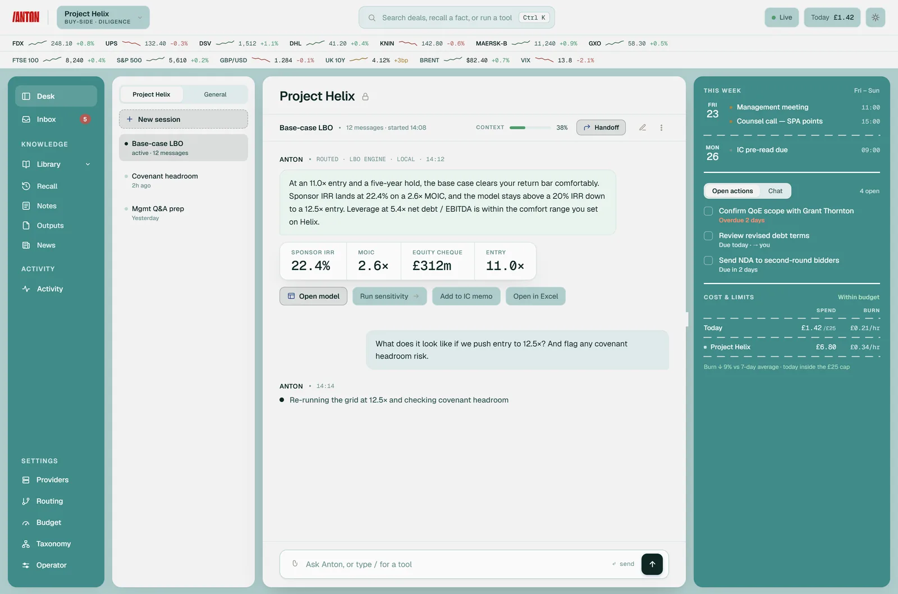
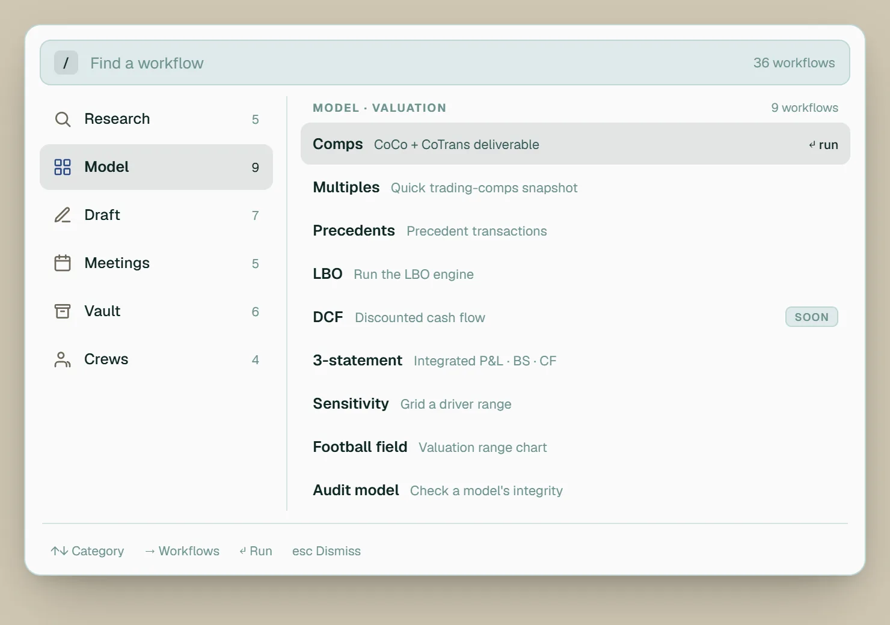
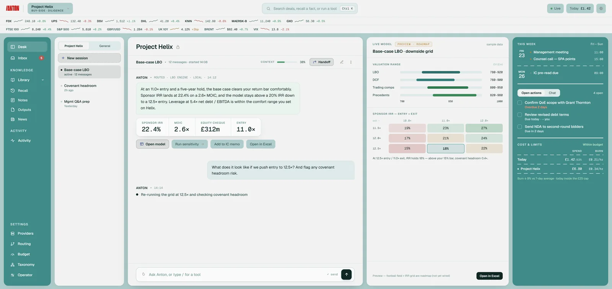
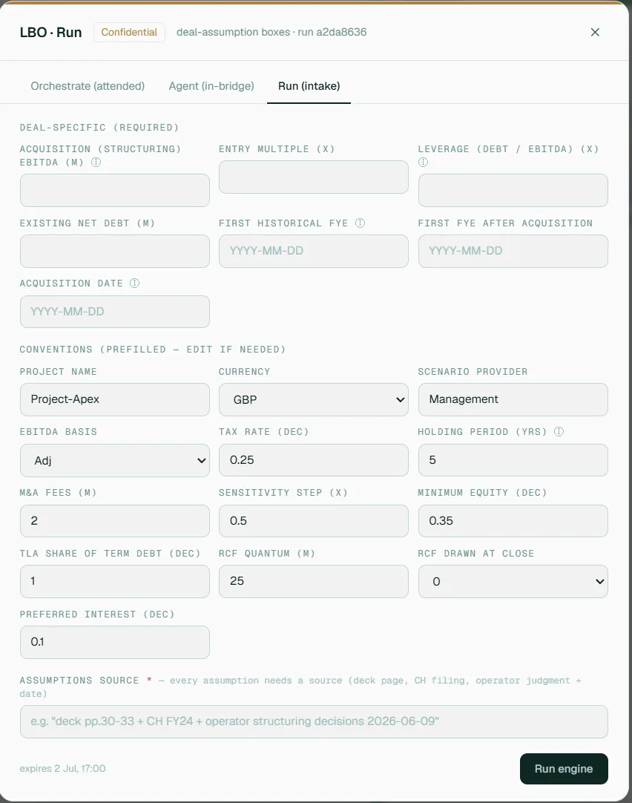
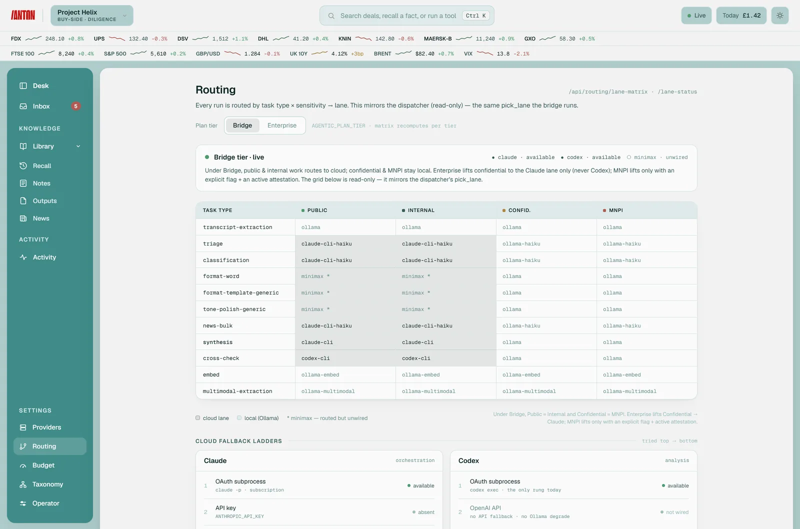
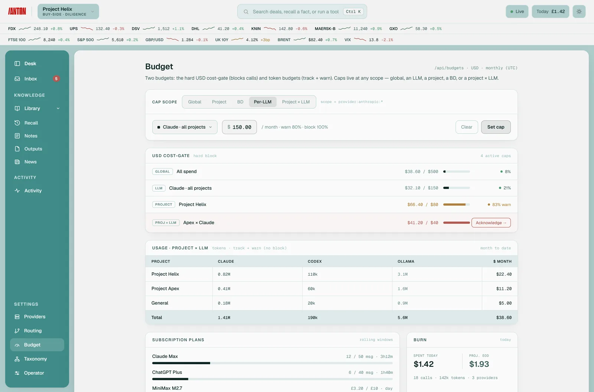
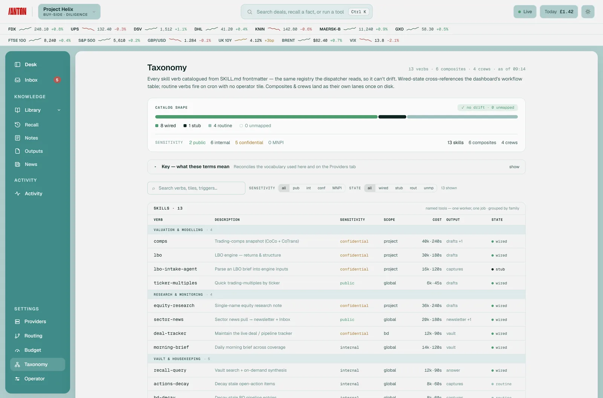
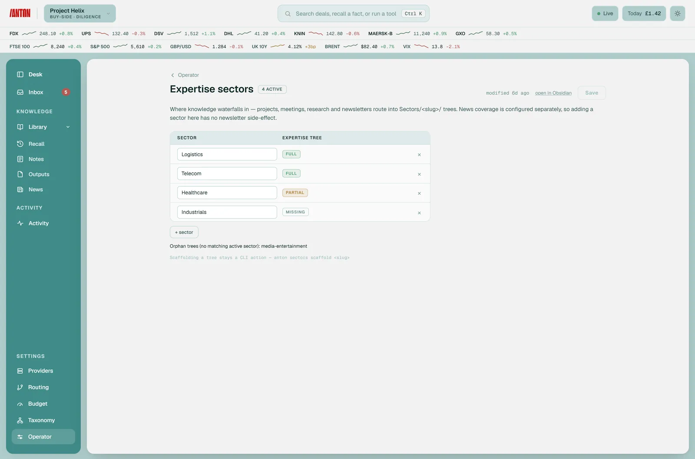
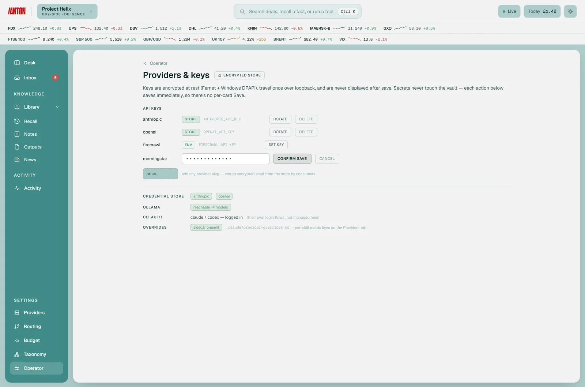

Operator-led AI harness designed for M&A and investment professionals
Designed to reduce the two biggest operational risks in AI-assisted dealmaking: data leakage and mathematical hallucinationsLLMs analyze CIMs, VDR docs, and NDAs to route information and draft investment committee narratives, while a deterministic Python engine strictly executes your LBO and DCF modellingVault structured as a second brain, consolidating information across Outlook, news, meeting notes. Available on demand to prepare agendas, track DD and draft deal materialsCrucially, strict data governance ensures your highly confidential deal materials remain confidential*
* Data confidentiality is maintained by running sensitive documents on local LLMs or enterprise subscription models by default
Built to produce genuine first-drafts and actionable insightsFrom LBO models to targeted IC memos, every output is heavily structured, fully sourced, and operator-gated
The single-operator cockpit over a Markdown vault — the same deal flows through every lane, with the sensitivity guard and audit trail wired through for institutional compliance.*
* Shown with synthetic demo content









| Issue | Generic AI Platforms | |
|---|---|---|
| Valuation Engine | Black-Box Computations: Relies on non-deterministic LLMs to calculate figures, leading to frequent mathematical hallucinations and broken dynamic formulas. | Deterministic Execution: Zero numbers are computed by the LLM. Financial modeling tasks shell out to a native Python engine that drives versioned Excel templates (LBO, DCF, Comps) cell-by-cell. |
| Data Confidentiality | Opaque Cloud Risk: Relies on generic cloud privacy policies; high operational risk of leaking sensitive Virtual Data Room (VDR) contents or deal parameters. | Structurally Enforced Local Isolation: Governed by a strict sensitivity guard
mapping files into four distinct tiers. Confidential and MNPI data tiers default
to a local-only GPU, ensuring data never leaves the machine. |
| Execution Governance | Unchecked Background Swarms: Opaque agentic loops execute hundreds of hidden background calls, generating highly unpredictable, non-repeatable outputs. | Four Explicit Processing Lanes: The operator selects the exact lane (Chat, Single Skill, Composite, or Autonomous Crew) via specific verbs, dictating hard token ceilings and explicit determinism boundaries. |
| Budget Control | Unmonitored Runaway Costs: Opaque architectures lack granular tracking, risking surprise API credit card overruns during intensive deal sprints. | Granular Token Budgeting: Features strict monthly budget caps that can be configured globally, per individual model, or mapped directly to a specific deal project with proactive friction warnings. |
| Memory Governance | Silent Database Overwrites: Automatically appends unverified data or vector embeddings to a shared database, creating unvouched facts and corrupting deal history. | Principal-Gated Knowledge Base: Waterfall knowledge structure on a per project > per sector > expert essence, feeding from all available sources. System conclusions are delivered purely as isolated proposals. Fact updates to your permanent Markdown vault require explicit operator sign-off—never overwritten, never silent. |
| Institutional Audit Trail | Opaque Operations: Opaque systems offer zero underlying insight into why a model arrived at a particular conclusion, making validation impossible. | Comprehensive Telemetry: Every routine run and model call generates a structured, queryable trail through a sanitize-then-redact pipeline, logging provider, model, token cost, sensitivity tier, and execution lane. |
| Continuous Optimization | Static Prompt Architectures: Requires manual, complex prompt engineering or expensive code-level adjustments to align with changing workflow preferences. | Heuristic Feedback Loops: Actively monitors recurring follow-up query patterns to cluster behaviors and propose concrete, version-controlled modifications to its own underlying templates and operating rules. |
Layers communicate over the filesystem, HTTP, or a subprocess — never by importing each other. That discipline keeps the math auditable, data contained, and the heavy engines swappable.
.md file
with mandatory frontmatter. Git-managed; the file is the record.The guard is one before_llm_call hook registered at startup. A single skill,
a step inside a composite, and every role inside a crew all flow through it. No lane bypasses it.
In the current LLM environment there is a tradeoff between intelligence (quality), privacy (LLM providers using data to train their models) and cost (API/subscription for cloud; very high costs for local hardware). Anton gives the operator the flexibility to use any provider or mix providers including local LLM to maximise budget.
Determinism = will the same request give the same answer? More bars = more repeatable (a fixed engine call); fewer = emergent (agents reason freely, so output varies). The left lanes are cheap and exact; the right lanes are powerful but variable.
Every note carries a tier. The guard maps tier to an allowed lane before dispatch, and defaults to the more restrictive lane when uncertain.
A work in progress, shared for review. Honest about what's live and what isn't.
"He grimly does his work and sits motionless until it's time to work again, we can all take a page from his book" - Gilfoyle Bertram